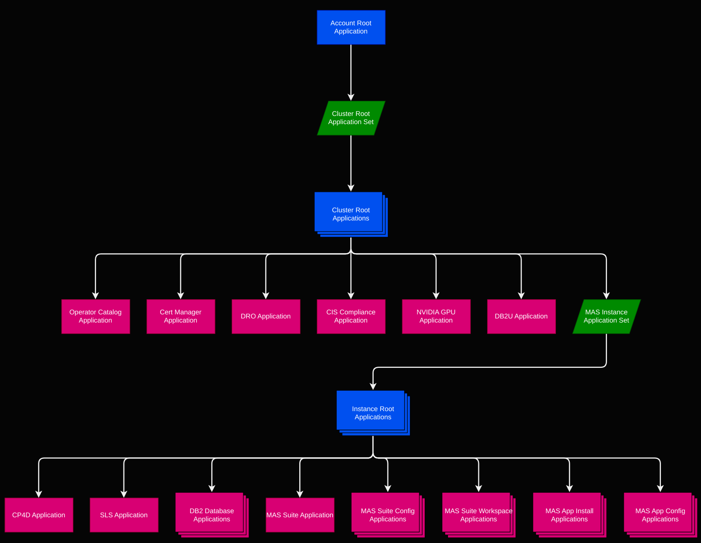

Helm Charts
The ibm-mas/gitops repository provides Helm Charts that define all of the Kubernetes resources required to deploy MAS instances using ArgoCD. The Helm Charts are split across three sub directories, depending on their intended target:
- Helm Charts under
root-applicationscontain templates that define other ArgoCD Applications and Application Sets and target the cluster (and namespace) on which ArgoCD is running. - Helm Charts under
cluster-applicationscontain templates that define Kubernetes resources for installing cluster-wide MAS pre-requisites on Target Clusters - Helm Charts under
instance-applicationscontain templates that define Kubernetes resources for installing one or more MAS instances on Target Clusters.
Application Structure
The following figure shows a tree of ArgoCD applications and Application Sets defined by the Helm Charts under root-applications, starting with the Account Root Application at the top:

The Account Root Application Helm Chart installs the Cluster Root Application Set. This generates a set of MAS Cluster Root Applications based on the configuration in the *Config Git Repo.
The Cluster Root Application Helm Chart contains templates that generate ArgoCD Applications for configuring various dependencies shared by MAS instances on the target cluster, including:
- Operator Catalog (Helm Chart)
- Redhat Certificate Manager (Helm Chart)
- DRO (Helm Chart)
- Db2u Operator (Helm Chart)
- CIS Compliance (Helm Chart)
- Nvidia GPU Operator (Helm Chart)
The Cluster Root Application Helm Chart also installs the MAS Instance Root Application Set. This generates a set of MAS Instance Root Applications based on the configuration in the Config Git Repo.
The MAS Instance Root Application Helm Chart contains templates for generating ArgoCD Applications that install and configure some instance-level dependencies (e.g. SLS, DB2 Databases), MAS Core and various (MAS) applications (e.g. Manage, Monitor, etc) in the appropriate namespace on the target cluster:
- CP4D (Helm Chart)
- SLS (Suite License Service) (Helm Chart)
- MAS Suite (Helm Chart)
- MAS App Assist Install (Helm Chart)
- MAS App IoT Install (Helm Chart)
- MAS App Manage Install (Helm Chart)
- MAS App VisualInspection Install (Helm Chart)
- MAS App Health Install (Helm Chart)
- MAS App Monitor Install (Helm Chart)
- MAS App Optimizer Install (Helm Chart)
- MAS App Predict Install (Helm Chart)
There are some special templates in the MAS Instance Root Application Helm Chart that are capable of generating multiple Applications; necessary when there may be one or more instances of that type of resource, which will vary between MAS instances - for instance DB2 databases, suite configs, and suite/application workspaces:
- DB2 Databases (Helm Chart)
- MAS Workspaces (Helm Chart)
- MAS App Configs (Helm Chart)
- Suite Configs
- This application is responsible for installing various types of suite configuration types (Mongo, BAS, SMTP, etc) at various scopes (system, app, ws, wsapp). The Helm Chart it uses is chosen dynanmically based on the configuration type: